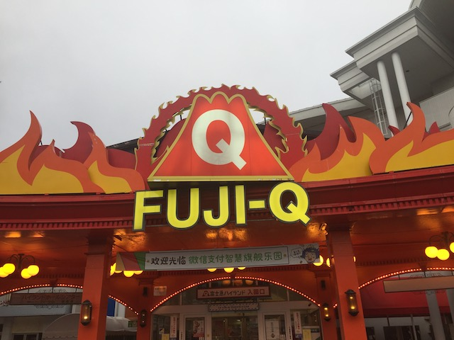
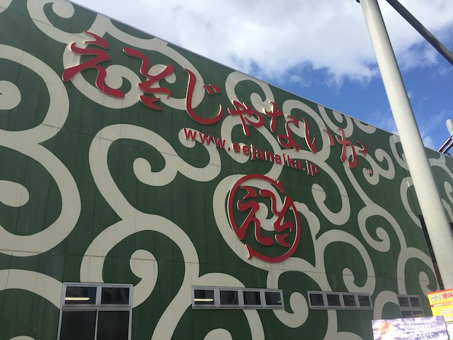
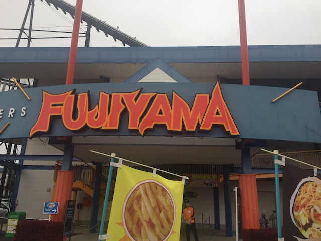
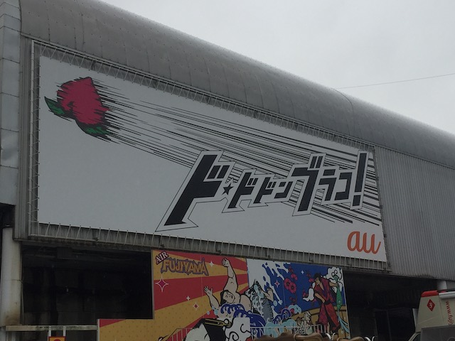
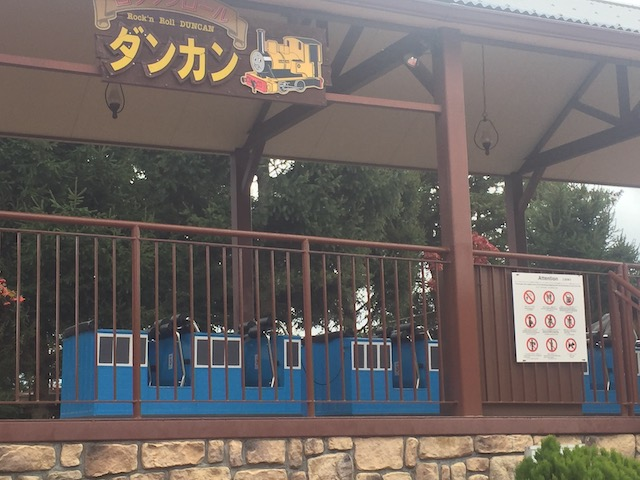
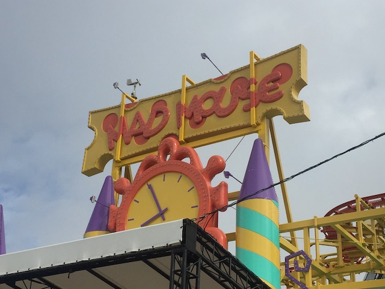
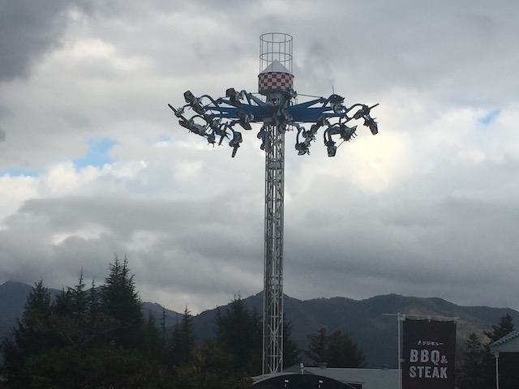
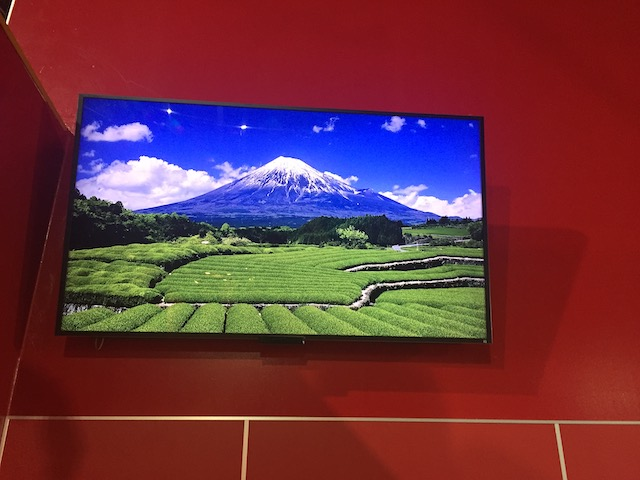
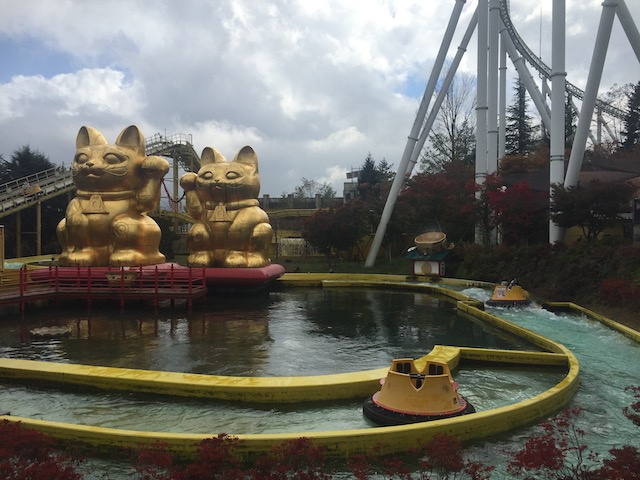

| |
Fuji-Q Highlands Review

Fuji-Q Highlands is a park that has...an interesting repuation in the roller coaster community. For the longest time, Fuji-Q has a reputation to parks similar to La Ronde and Mt. Olympus, parks that enthusiasts, including myself, give very negative reviews to, and constantly complain about. Primarily for their operations, as....yeah. Tons of people have left very negative reviews of the way they operate their rides. And....while there are some things to critique, the operations are NOT that bad! Most of the operation issues I noticed at Fuji-Q came from having extra safety precautions that I don't find necesarry, and having coasters that are very low capacity. But as for the operations, speed of the operators, all that stuff, they're as efficiant as all the other Japanese parks, which is to say, they bust their ass. And on top of that, the coaster collection they have is freaking incredible! For instance, Eejanaika is one of the few S&S 4D coasters ever built, and....HOLY SH*T!!! SO GOOD!!! Dododonpa is not only super unique, but....THAT LAUNCH!!! DROOL!!! Fujiyama may not sound good as a Togo Hyper, but...man! This ride is a ton of fun! And Takabisha may just be a Eurofighter, but it is one of the best of its kind. Enthusiasts generally will debate these rides as to how good they are, but spoiler alert. THEY ARE GREAT (Just read our reviews of them down below)!!! But roller coasters aside, the park has a decent collection of flat rides, water rides, and other fun stuff to do. And of course, the setting by Mt. Fuji (hence the name) is something really good. Keep reading to know more about one of Japan's biggest amusement parks.
Rollercoasters
There is a link to a review of all the Rollercoasters at Fuji-Q Highlands.
Please keep in mind that there is no review of Voyage Dans Le Ciel or Zokkon because it either was closed when I last visited or it didn't exist.
Top Coasters
Eejanaika Review

Really Fun Coasters
Dododonpa Review

Fujiyama Review

Takabisha Review

Kiddy Coasters
Rock 'N' Roll Duncan Review

Past Coasters
Mad Mouse Review

Flat Rides
All right. The flat ride collection at Fuji-Q Highlands is...decent. Nothing out of this world or extrordinary, but still a lot of fun. The one big flat ride that I rode at Fuji-Q Highlands is Tentekomai. This is one of those Sky Roller rides. These things apparently can be crazy as I've seen some serious flipping on rides like this, but I just couldn't get it to flip. Sure, I did a little better on the one here than the one in Bakken, but this ride is still very finicky, and hard to flip. It's very stubborn and you have to get it just right. It's not like the 2 person Top Spin or Brain Surge where you just let all hell break loose. Maybe if there was one in So-Cal, I could practice until I got the hang of it and could make it go crazy. But I still need a lot more practice. But if you can get it to flip, it looks like an insane flat ride. However, Fuji-Q does have a lot of other good flat rides. They have an S&S Space Shot, a giant frisbee, a semi-starflyer that seems like a knock-off, one of those swinging inverter ships that are a lot of fun, and yeah. Those are the extreme really fun flat rides. Also, for tamer flat rides, they also have a pirate ship, teacups, chairswings, a ferris wheel (which I did rode), and a merry go round.

Hopefully I can crack the code to making these rides go crazy sometime!
Dark Rides
Fuji-Q Highlands has an...interesting dark ride collection. Let's focus on the one dark ride that I rode here. Fuji Airways, or as I like to call it, "Soaring Over Mt. Fuji". Cause....yeah. This ride pretty much uses the exact same technology as Soarin'. Yeah. You fly around Mt. Fuji, see gardens, weather a storm, all that fun stuff. It's weird, but surprisingly, a lot of fun. I really enjoyed doing that. The weather around the park makes seeing Mt. Fuji a real bitch and challenge, and I never saw the mountain during my visit (Did get to see it while in Japan though). That was the one dark ride I did at Fuji-Q. However, they do have other fun rides. For instance, there are a couple dark rides in their Thomas the Tank Engine area. I never rode it as....probably not a great idea riding the dark ride in the kids area. But....it looks fun. Maybe next time, I won't give a f*ck and just do it. Also, there's a 4D show in the Thomas area. Same thing applies. Also, it's in Japanese, and I don't speak that.

"Soarin' to Fuji. We are ready for take-off."
Water Rides
Fuji-Q Highlands has a couple water rides. I didn't ride either of them. But I feel like they're worth discussing anyways. First up, River Rapids Ride (Nice name). It goes up a lift hill, winds its way down with some rapids, and...it looks fun. It looks like a lot of fun. I also really like the golden cat statues that the park has for the ride. But I didn't ride the ride for 2 main reasons. #1. It was cold when I visited. But the park can't do anything about that. #2. Capacity. Yeah. The thing about this rapids ride that makes it so....infamous are the boats. This thing has HORRIBLE capacity. The boats only seat 4 people at most! Which....GAH!!! I think this ride is the PERFECT encapsule of "Fuji-Q doesn't give a flying f*ck about capacity!". Which is really frustrating cause this does look like a really good rapids ride! I just can't afford the time to wait in the horrendous line this thing probably produces.Their other water ride is Cool Japan, which is a standard splashdown boat ride. It looks fun, but standard. Nothing special.

A rapids ride should NOT have boats that small.
Dining
All right. The food at Fuji-Q Highlands is....meh. The one place I ate at was a resteraunt called Pizza-la. Now I know a lot of enthusiasts bad-talked this place, but....it wasn't that bad. The Sausage pizza was...intersting. OK, not the best thing ever, but I still enjoyed it. It's pizza. Damn near impossible to f*ck that food up. Sure, just having the sausage on it was a little weird, but still good. Yeah, it's typical amusement park crap. Not gonna lie. But it was satisfactory (I actually like it. It's just overpriced. That's all). The other places in the park look, all right. The rest of the food, yeah. Also seems to just be typical amusement park crap. The one upside it appears is that it's decently priced. Also, they apparently have some good French resteraunt in their France themed area. That's certainly unique, though French Cuisine was never really my thing (Food snobs are appaled by me now lol).
Theming and Other Attractions
Here are the reviews of all the other stuff at Fuji-Q Highlands. Well, as far as theming goes, there is NONE!!!! The park is all pure asphalt! The most theming there is is the France Area in the front of the park, which....it looked cool. Didn't really spend much time in it, but...I think someone is getting inspired by Parque Espana. ;) But aside from that and Thomas Land, it's all just asphalt. The park setting of the park is good. It's right by Mt. Fuji. Too bad it's too foggy to see the mountain the majority of the time. I never saw the mountain while at the park, and had to see it while on a bullet train. OK. What about other stuff to do? Oh, there's plenty of other stuff. For instance, the Haunted Hospital. This is a 45 minute horror maze, which....DAMN!!! That is IMPRESSIVE!!! I heard some people calling it overrated. But when you consider the whole thing about it being a 45 minute haunt maze, that is just...DAMN!!! I'm not sure if it's still there. I remember hearing it closed. But after googling it, I can't find anything saying it closed. And apparently, there are some other permananent horror mazes. I love those things, but knowing the crowds at Fuji-Q, those things generate enormous lines that would suck up your day.
In Conclusion
Fuji-Q Highlands is a really fun amusement park. I know the park has gotten a bad reputation because of its operations. And yeah. It is true that the coasters in the park do not have the best capacity, and because the park is one of the biggest parks in Japan and the most well known, it gets very busy, with most of the coasters getting 2 hour lines. However, if you're smart and buy fast passes (SERIOUSLY!!! BUY FASTPASSES!!!), you can really get all the major rides in and have a fantastic day! Yeah, I know the rides are finicky in the rain (and it rains a lot in Japan). But yeah. The Fastpass will SAVE YOUR ASS!!! The coaster collection here is AMAZING!!! Eejanaika is one of the best coasters ever, Dododonpa is awesome, unique, and has the BEST LAUNCH EVER, Fujiyama and Takabisha are both a ton of fun, there's a decent amount of flat rides that are a lot of fun, it has a couple cool dark rides, some really cool walk-throughs, and just a lot of cool fun stuff at the park. And to be fair, I have heard other enthusiasts saying that the park is getting better over the years. Which is really good. I'm very happy to hear that. Yeah. You have to really plan your day out, and do a lot of work, but it'll pay off! If you're a coaster enthusiast, you have to check out Fuji-Q Highlands.
Enthusiast FAQs.
*Are there kiddy coaster restrictions? - Nope. You can ride Rock'N'Roll Duncan.

Tips
*GET FASTPASSES FOR ALL THE MAJOR COASTERS!!!!
*GET THE FASTPASSES IMMEDIETLY!!! THEY SELL OUT QUICKLY!!!
*GET TO THE PARK HOURS BEFORE OPENING SO YOU CAN RUSH IMMEDIETLY TO THE FASTPASSES!!!
*Try and ensure you go on as sunny of a day as possible. All the coasters are very finicky in the rain.
*On another weather note, the sunnier the day is, the better the chance of seeing Mt. Fuji (it's beautiful, but I never saw it at Fuji-Q).
*Don't ignore any of the major coasters.
*From what I can gather, the Haunted Hospital, is like a 3 hour commitment.
*Try and do the Hamster Suspended Coaster right after getting the fastpasses if credit whoring is a high priority for you.
*Once again, GET FASTPASSES!!! IT'S THAT IMPORTANT!!!
*Have Fun!
Theme Park Category:
Amusement Park
Location
Fujiyoshia, Yamanashi, Japan
Last Day Visited
November 5, 2018
Video
I unfortunetly did not shoot enough video to make a Fuji-Q Highlands video.
Complete Update List
2018
JAPAN 2018!!! =)
Here's a link to the parks website.
Home
|